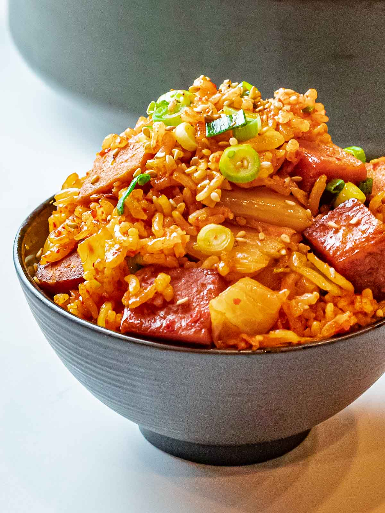

Kimchi Fried Rice

Description
Spicy Korean style fried rice with kimchi and spam. It is a widely popular korean dish in the States!
Ingredients
- Kimchi
- Day Old Rice
- Spam
- 1 Egg
- Diced Scallions
- Vegetable Oil
Steps
- Heat up vegetable oil in a sauce pan until a light smoke is visible.
- Add spam on to the sauce pan and sear until both sides are golden brown 1-2 minutes.
- Add in rice and and kimchi and stir fry all ingredients together for 5 minutes
- While rice is cooking take a small skillet and cook eggs on the side how ever style you want
- Take your finished egg and add it into your sauce pan with the other ingredients
- Garnish with diced scallions